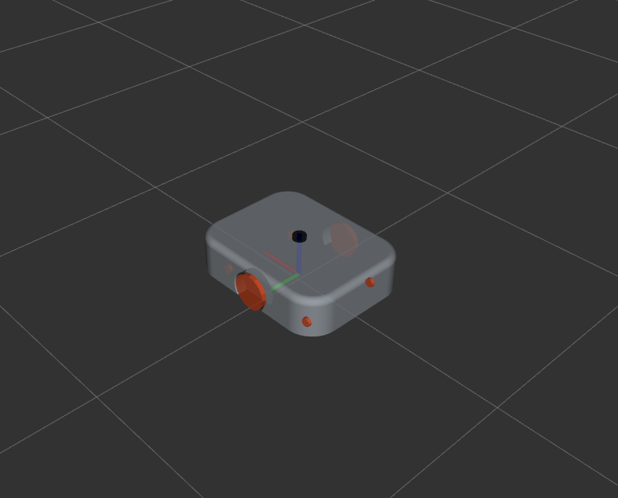

Usage
Source the setup file from project directory on every new shell you open:
source install/setup.bash # (1)!
- Replace ".bash" with your shell.
Possible values are:- setup.bash
- setup.sh
- setup.zsh
Optional
For convenience, you can include this command in the bash file for automatic execution each time you open a new terminal. Run the command from twr directory:
echo "source $(pwd)/install/setup.bash" >> ~/.bashrc
Model preview in RViz2
Use this launch file to see model preview in RViz2:
ros2 launch twr_bringup rviz2.launch.py
As a result, the RViz2 will be launched with a robot model without simulation:

Start simulation in Gazebo Sim
The following command will launch the main bringup file for the robot in the simulation:
ros2 launch twr_bringup twr_bringup.launch.py
Alternatively, you can use a helper script to get started quickly:
chmod 700 scripts/host/rebuild_and_launch.bash &&
./scripts/host/rebuild_and_launch.bash # (1)!
- For more information, see scripts description.

Control
Keyboard control
Use the teleop_twist_keyboard package to implement basic keyboard control:
ros2 run teleop_twist_keyboard teleop_twist_keyboard --ros-args \
-r /cmd_vel:=/diff_drive_controller/cmd_vel \
-p stamped:=True
Set goal point
This function is implemented based on the Nav2 framework.
Use the 2D Goal Pose function in RViz2 to set the desired position:
Now you can choose any position and orientation of the robot on the presented map: